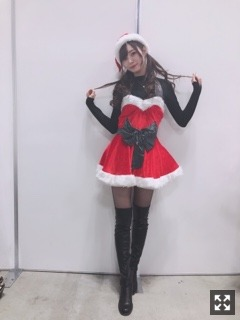

今年は来るかな〜なんて
みなさまこんにちは！！
乃木坂46の
梅澤美波です！！
サンタですどうもっ
改行無くなってしまってて
読みにくかったですねすみません(；；)
気をつけます( .. )
先日、東京ビックサイトにて
個別握手会がありました！
お越しくださった皆様、
ありがとうございました〜！
久しぶりすぎる握手会でした、、
とても楽しかった〜
クリスマスに近いということで
サンタさんになりました〜
１部から着ようと思ったけど
久しぶりの個握だったし
私服も着たいな〜と思って１部だけ私服！！
こんな感じでした〜
すっかり冬ですね〜
おＮＥＷのニット✌︎お気に入り
冬はやっぱりニットが着たくなります！
暖かくてとても良いです◎
2.3部と4.5部で
２パターンのサンタさん着ましたっ
2.3部サンタ撮り忘れましたごめんね(；；)

ででん
去年着たのとおなじだけど、、
これお気に入りなんです！！
メイクさんにおまかせしたら
ツインテールにしてくれました〜
お花もこんなに沢山(；；)
本当に本当にありがとうございます！
久しぶりの握手会だったから
いろんなお話出来たな〜
２０１８年の活動を
ファンの皆様と改めて振り返って
本当に濃くて充実した一年間だったし
たくさんの方に出逢って支えられて
感謝でいっぱいの一年だったなあと感じました
また来年！って会話を交わすことも増えて
ああ、もう年末なんやな〜と、、
時間の速さにびっくりします( .. )
来年会える約束が出来るのは
とても幸せなことですね( ¨̮ )
そして5部終わりには
能條さんと川後さんの卒業セレモニー。
私も参加して見送ることが出来ました！
お二人の背中は本当にかっこよくて
力強い言葉をファンの方に送っていて
すごく寂しいけど、
私ももっと頑張らなきゃ！と思いました
またどこかでお会いできるように
私もお仕事頑張らなきゃ！！
改めて、
ご卒業本当におめでとうございます！
最後に写真とって頂きました！(；；)
宝物です。
次の握手会は２３日の
大阪全国握手会！！
ジコチューで行こう！最後の握手会なので
フルサイズの披露は中々もうないので
ぜひ観に来てください！！
・ジコチューで行こう！
・空扉
・自分じゃない感じ
・あんなに好きだったのに
の４曲に参加させて頂きます！
久しぶりに踊るなあ〜楽しみです✌︎
思い出がたくさん詰まったシングルです。
大好きで大切な曲ばかり
ぜひ会いに来てね
今年最後の握手会だし
一緒に楽しみましょう〜！！
告知◎
〜雑誌
▽「bis」
▽ 「日経エンタテインメント！」
▽「月刊ヤングマガジン」
発売中です！
▽１２／２２ 「スピリッツ」
表紙、巻頭グラビア担当させていただきます！
▽１２／２２ 「アップトゥボーイ」
ソログラビアさせて頂いております！
なんとアップトゥボーイさん2度目の裏表紙も！！(；；)チェックお願いしますっ
▽１２／２８ 「乃木坂46×週刊プレイボーイ」
色々な企画盛りだくさんですっ
〜TV
▽１２／２３ 日本テレビ系 23:00〜 「おしゃれイズム クリスマス1HSP」
〜ラジオ
▽毎週月〜木 ニッポン放送 19:56〜20:00 「乃木坂46 梅澤美波の『のぎぼき』！」
それでは今日はこの辺で！
またね〜
今日は夕焼けがとても綺麗でしたよ〜
Original：https://www.nogizaka46.com/s/n46/diary/detail/48392?ima=4947&cd=MEMBER